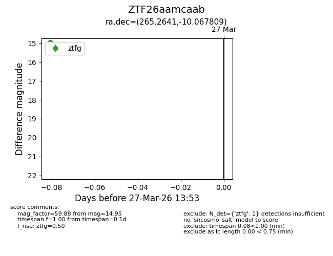
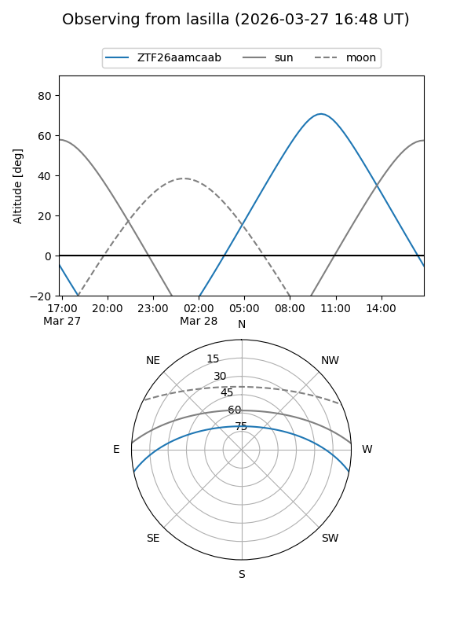
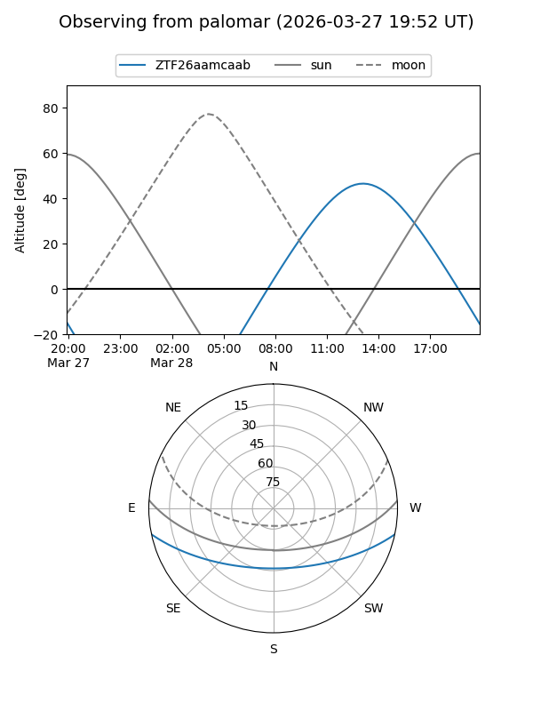

ZTF26aamcaab
Target ZTF26aamcaab at 2026-03-27 13:56
Aliases and brokers:
FINK: link
Lasair: link
ALeRCE: link
alt names
ZTF26aamcaab (ztf,fink_ztf)
Coordinates:
equatorial (ra, dec) = 265.2641,-10.06781
equatorial (HMS+DMS) = 17:41:03.39,-10:04:04.11
galactic (l, b) = (15.6888,+10.67172)
Flags:
Photometry:
last ztfg=14.95
1 ztfg detections
Lightcurve

Visibility


Additional plots